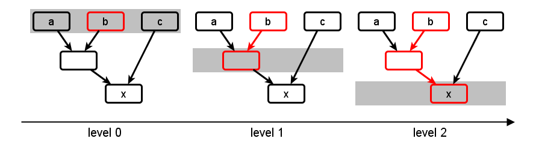
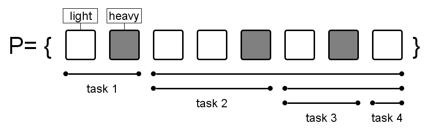
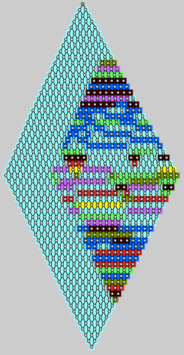
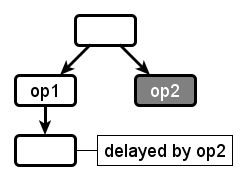

Toposort engine
Motivation
Topological sorting of the graph nodes to decide on the update order is a common strategy among reactive programming implementations.
It can guarantee glitch freedom and update minimality.
The algorithm can easily be adapted to support parallel updating, too.
Concept
To apply the topological sorting, each node is assigned a level, which is the maximum level of its predecessors plus 1. Nodes without any predecessors are at level 0.
This figure shows how the update propagation proceeds in level iterations after a node has been changed:

Sequential algorithm
Sequential toposort executes updates in the same thread that triggered the input.
It can be implemented with a priority queue that’s ordered by node level, but to reduce the number of swaps, an improved algorithm is used:
Q = Successors of changed input nodes
While Q is not empty:
P = {}
Find minimum level m in Q
Move nodes with level m from Q to P
Update nodes in P
add successors of changed nodes to Q
Q contains all nodes that are scheduled to be updated eventually. P contains all nodes with the same level that are to be updated next. Selecting and moving nodes from Q to P can be done efficiently by partitioning Q, which only has to be done once per iteration.
Parallel algorithm
Parallel toposort allows to update nodes on the same level in parallel, i.e. by doing a parallel_for over P. This means that multiple threads might add successors of changed nodes to Q. To avoid contention, a thread-local data structure holds a buffer Q[t] and keeps track of its own minimum level. The algorithm is summarized here:
Q[t] = Successors of changed input nodes
While any Q[t] is not empty:
P = {}
Find global minimum level m over all Q[t]
Move nodes with level m from each Q[t] to P
Map nodes in P to tasks and update them in parallel
add successors of changed nodes to Q[t]
The parallel_for over P maps the total range of nodes to tasks based on node weights, which indicates how computationally expensive their update is. The range is recursively split as shown in this example:

If a range does not exceed a certain weight threshold and is thus not splittable, there is no need to spawn additional tasks.
The following image shows the actual thread mapping of a synthetic graph, consisting of lightweight nodes only:

Changes are propagated from top to bottom. and the unique colors indicate which thread a node was updated by.
Each node has weight 1 and a range of nodes is splittable when its total weight exceeds 8.
Note that as soon the parallelization starts, nodes that are next to each other in the image are not necessarily next to each other in the range.
Issues
Parallel toposort can only advance to the next level after all updates of the current level are done. This can introduce unnecessary waiting, which results in sub-optimal parallel utilization. The following example shows this:

op2 represents a computationally expensive operation, while op1 finishes quickly. Nonetheless, the successor of op1 can not be updated unless op2 has completed as well, even though there’s no dependency relation between the two.
Conclusions
Single-threaded Toposort provides glitch freedom and update minimality with low overhead.
The parallel variant is an option when dealing wide and shallow graphs, but less so for deep graphs with multiple layers of heterogeneous nodes.
For this reason, other propagation engines should be preferred when it comes to parallelization.
 Hold
Hold WeightHint
WeightHint Continuation
Continuation REACTIVE_DOMAIN
REACTIVE_DOMAIN